30 ggplot の基本

ggplot2 パッケージは、最も人気のあるデータビジュアライゼーションの R パッケージです。ggplot() はこのパッケージの中核であり、このアプローチ全体が “ggplot” として口語的に知られており、結果として得られる図は親しみを込めて “ggplots” と呼ばれることもあります。これらの名前の “gg” は、図を作成するために使用される “grammar of graphics” を反映しています。 ggplot2 パッケージ は、その機能性をさらに向上させるさまざまな補助的な R パッケージの恩恵を受けています。
構文は R の base で描画する方法とは大きく異なり、それに伴って知識を獲得できるまで時間がかかります。ggplot2 パッケージを使用するには、一般的にユーザーは tidyverse パッケージとの互換性が高い方法でデータをフォーマットする必要があり、結果的にこれらのパッケージを一緒に使用することは非常に効果的です。
この章では、ggplot2 パッケージを使った描画の基礎を説明します。プロットをきれいに見せるための提案や高度なテクニックについては、ggplot のヒントの章を参照してください。
リソースセクションにリンクされているいくつかの広い範囲をカバーした ggplot2 パッケージのチュートリアルがあります。また、RStudio のウェブサイトから ggplot によるデータビジュアライゼーションのチートシートをダウンロードすることができます。データを創造的に可視化する方法のインスピレーションを得たい場合は、R graph gallery やData-to-viz のようなウェブサイトを参照することをお勧めします。
30.1 準備
パッケージの読み込み
以下のコードを実行すると、分析に必要なパッケージが読み込まれます。このハンドブックでは、パッケージを読み込むために、pacman パッケージの p_load() を主に使用しています。p_load() は、必要に応じてパッケージをインストールし、現在の R セッションで使用するためにパッケージを読み込む関数です。また、すでにインストールされたパッケージは、R の基本パッケージである base （以下、base R）の library() を使用して読み込むこともできます。R のパッケージに関する詳細は R の基礎 の章をご覧ください。
pacman::p_load(
tidyverse, # ggplot2 やその他データマネジメントに関するツールが含まれています
rio, # インポートとエクスポート
here, # ファイル・ロケーター
stringr # 文字列に関する作業
)データのインポート
エボラ出血熱の流行をシミュレートしたデータセットをインポートします。お手元の環境でこの章の内容を実行したい方は、 クリックして「前処理された」ラインリスト（linelist）データをダウンロードしてください>（.rds 形式で取得できます）。データは rio パッケージの import() を利用してインポートしましょう（rio パッケージは、.xlsx、.csv、.rds など様々な種類のファイルを取り扱うことができます。詳細は、インポートとエクスポート の章をご覧ください）。
linelist <- rio::import("linelist_cleaned.rds")ラインリストの最初の 50 行を以下に表示します。ここでは、連続変数である age、wt_kg（キログラム単位の体重）、ct_blood（CT値）、days_onset_hosp（発症日と入院日の差）に注目します。
一般的なクリーニング
プロット用のデータを準備する際には、できるだけ 「tidy な（整然とした）」 データの基準に沿うようにするのがよいでしょう。その方法については、本ハンドブックのデータ管理の章、データクリーニングと主要関数 などで説明しています。
プロットに適したデータを準備する簡単な方法としては、データの内容を表示に適したものにすることが挙げられますが、これは必ずしもデータ操作に適しているとは限りません。例えば、次のようなことです。
- 文字列の
NA値を “Unknown” という文字列で置き換える。 - 列の値が所定の序列レベルになるように因子型に変換することを検討する。
- アンダースコアなどの「データに適した」値を通常のテキストまたはタイトルケースに変更するように、一部の列をクリーニングする（データクリーニングと主要関数 を参照）。
以下に、この作業の例を示します。
# 列の表示をより分かりやすい名前にします
linelist <- linelist %>%
mutate(
gender_disp = case_when(gender == "m" ~ "Male", # m を Male に
gender == "f" ~ "Female", # f を Female に
is.na(gender) ~ "Unknown"), # NA を Unknown に
outcome_disp = replace_na(outcome, "Unknown") # outcome の NA を Unknown に置換
)縦長のデータへの転回
データ構造の問題として、ggplot2 パッケージではデータを転回して縦に長いフォーマットにしたいこともよくあります。詳しくはデータの縦横変換の章をご覧ください。

例えば、linelist に登録されている各症例とその症状のような、「横に広い」フォーマットのデータについてプロットしたいとします。以下では、symptoms_data という mini-linelist を作成し、case_id と症状の列のみを格納します。
この mini-linelist の最初の 50 行は次のようになっています。それぞれの症状を列にして「横に広く」フォーマットされているのが分かります。
特定の症状を持つ症例の数をプロットしたい場合、各症状が特定の列であるという事実によって制限されます。しかし、症状の列を転回して、次のように縦に長いフォーマットにすることができます。
symptoms_data_long <- symptoms_data %>% # symptoms_data と名付けた "mini" linelist から始めます
pivot_longer(
cols = -case_id, # case_id を除いた全ての列（全ての症状に関する列）を転回します
names_to = "symptom_name", # 症状に関する新しい列の名前を割り当てます
values_to = "symptom_is_present") %>% # 「はい、もしくはいいえ」の値をもつ新しい列の名前を割り当てます
mutate(symptom_is_present = replace_na(symptom_is_present, "unknown")) # NA を unknown に変換しますこちらが最初の 50 行です。case には 5 つの行があることに注意してください - それぞれの症状ごとに 1 つの列があります。新しい列である symptom_name と symptom_is_present は、転回した結果です。このフォーマットは、他の操作にはあまり役に立たないかもしれませんが、プロットには便利であることに注意してください。
30.2 ggplotの基礎
「グラフィックの文法」- ggplot2
ggplot2 パッケージでのプロットは、作図レイヤーやデザイン要素を重ねて「追加」することが基本で、各コマンドはプラス記号（ + ）で前のコマンドに追加されます。その結果として、保存、修正、印刷、エクスポートなどが可能なマルチレイヤーの作図オブジェクトができあがります。
ggplot オブジェクトは非常に複雑になることがありますが、基本的なレイヤーの順番は、通常次のようになります。
- 土台となる
ggplot()コマンドから始めます。これは ggplot を「開く」もので、次に続く関数を+で追加することができます。一般的には、データセットもこのコマンドで指定します。 - “geom” レイヤーの追加 - これらの関数は、データを棒グラフ、折れ線グラフ、散布図、ヒストグラムなどの幾何学（図形）として視覚化します（組み合わせも可能です）。これらの関数は、すべて接頭辞として
geom_で始まります。 - 軸ラベル、タイトル、フォント、サイズ、配色、凡例、軸回転などのデザイン要素をプロットに追加することができます。
骨格となるコードの簡単な例を以下に示します。それぞれの要素については，以下のセクションで説明します。
# my_data の列を赤い点としてデータをプロットします
ggplot(data = my_data)+ # "my_data" というデータを使います
geom_point( # 点（ドット）のレイヤーを追加します
mapping = aes(x = col1, y = col2), # "map" の列を軸にします
color = "red")+ # geom の他の設定
labs()+ # タイトル、軸ラベル、などを追加します
theme() # 色、フォント、サイズなどデータではない要素（軸やタイトルなど）を編集します
30.3 ggplot()
ggplot2 のプロットの最初のコマンドは ggplot() です。このコマンドは、レイヤーを追加するための真っ白なキャンバスを作成します。さらに、+ 記号でレイヤーを追加するための方法を「開放」します。
通常、ggplot() コマンドは、プロットのために data = 引数を含みます。これは、プロットの後続のレイヤーに使用されるデフォルトのデータセットを設定します。
このコマンドは、閉じた括弧の後に + を付けて終了します。これは、コマンドを「オープン」な状態にします。ggplot は、完全なコマンドが最後に + のない最後のレイヤーを含む場合にのみ、実行/表示されます。
# これは真っ白なキャンバスであるプロットを作成します
ggplot(data = linelist)30.4 Geoms
真っ白なキャンバスはもちろん十分ではありません。データから幾何学（図形）を作成する必要があります（例：棒グラフ、ヒストグラム、散布図、箱ひげ図）。
これは、最初の ggplot() コマンドにレイヤー “geom” を追加することで行います。“geom” を作成する多くの ggplot2 パッケージの関数があります。これらの関数はそれぞれ “geom_” で始まるので、ここでは geom_XXXX() と一般的に呼びます。ggplot2 パッケージには 40 以上の geom があり、ggplot2 のファンが作ったものもたくさんあります。ggplot2 gallery でそれらを見ることができます。いくつかの一般的な geom を以下に示します。
- ヒストグラム -
geom_histogram() - 棒グラフ -
geom_bar()あるいはgeom_col()（棒グラフのセクションをご覧ください） - 箱ひげ図 -
geom_boxplot() - 点（例：散布図） -
geom_point() - 折れ線グラフ -
geom_line()あるいはgeom_path() - 傾向線 -
geom_smooth()
1 つのプロットで、1 つまたは複数の geom を表示できます。それぞれの geom は、前の ggplot2 パッケージのコマンドに + で追加され、後の geom が前の geom の上にプロットされるように、順次プロットされます。
30.5 データをプロットにマッピングする
ほとんどの geom 関数は、形状を作成するために何を使用するかを指示する必要があります。つまり、軸、形状の色、形状のサイズなどのプロットの構成要素にどのようにデータの列をマッピング（割り当て）するかを指示する必要があります。ほとんどの geom では、データの列にマッピングされなければならない必要不可欠な要素は、x 軸と（必要に応じて）y 軸です。
この「マッピング」は、mapping = という引数で行われます。mapping に与えるマッピングは、aes() でラップしなければならないので、以下に示すように、mapping = aes(x = col1, y = col2) のように記述します。
以下、ggplot() コマンドでは、linelist の症例がデータとして設定されています。mapping = aes() の引数では、age 列が x 軸に、wt_kg 列が y 軸にマッピングされています。
+ の後にプロットコマンドが続きます。“geom” 関数の geom_point() で図形を作成します。この geom は、上記の ggplot() コマンドのマッピングを継承しています。つまり、geom はどの軸と列がグラフに割り当てられているかをすでに知っている状態であり、それらの関係をキャンパス上の点として視覚化していきます。
ggplot(data = linelist, mapping = aes(x = age, y = wt_kg))+
geom_point()別の例として、以下のコマンドでは、同じデータを使用して、少しだけ違うマッピングと異なる geom を利用しています。geom_histogram() では、x 軸にマッピングされた列が必要なだけで、y 軸のカウントは自動的に生成されます。
ggplot(data = linelist, mapping = aes(x = age))+
geom_histogram()プロットの視覚的特性（エステティック）
ggplot の用語では、プロットのエステティック（aesthetic）には特定の意味があります。これは、プロットされたデータの視覚的特性を意味します。ここでの「エステティック」は、プロットされたデータの幾何学的形状を意味しており、タイトル、軸ラベル、背景色など、一般的な英語で「エステティック」という言葉から連想されるような周辺の表示は含まれていないことに注意してください。ggplot では、これらの詳細は “theme” と呼ばれ、theme() コマンドで調整されます（このセクションを参照）。
したがって、プロットオブジェクトの視覚的特性とは、プロットされたデータの色、サイズ、透過性、配置などのことです。すべての geom が同じオプションを持つわけではありませんが、多くの geom で使用することができます。以下にいくつかの例を示します。
-
shape =geom_point()で指定した点を、点、星、三角、四角…のように表示します。 -
fill =棒グラフや箱ひげ図などの内側を塗りつぶす色 -
color =棒グラフや箱ひげ図などの外郭線、またはgeom_point()を使用する場合は点の色。 -
size =大きさ（線の太さ、点の大きさなど） -
alpha =透過度（1 = 不透明、0 = 不可視） -
binwidth =ヒストグラムの階級の幅 -
width =“棒グラフ” の列の幅 -
linetype =線の種類 (例：実線、破線、点線)
これらのプロットオブジェクトの視覚的特性は、2 つの方法で値を割り当てることができます。
- 静的な値（例：
color = "blue"）を割り当て、プロットされたすべてのオブザベーションに適用する。 - データの列に割り当てられ（例：
color = "hospital"）、各観測値の表示はその列の値に依存する。
静的な値の設定
プロットオブジェクトの視覚的特性を静的なものにしたい場合、つまり、データの中のすべての観測値に対して同じものにしたい場合は、geom の中にその割り当てを記述しますが、mapping = aes() の引数の外に記述します。これらの割り当ては、size = 1 や color = "blue" のようになります。以下に 2 つの例を示します。
- 1 つ目の例では、
mapping = aes()はggplot()コマンドの中にあり、軸にはデータの中の年齢と体重の列がマッピングされています。プロットの視覚的特性であるcolor =,size =,alpha =（透明度）は静的な値に割り当てられています。わかりやすくするために、これはgeom_point()の中で行われていますが、後から他の geom を追加してプロットの視覚的特性に異なる値を設定することもできます。 - 2 つ目の例では、ヒストグラムでは x 軸のみを列にマッピングする必要があります。ヒストグラムの
binwidth =,color =,fill =（内部色）,alpha =は、再び geom 内で静的な値に設定されます。
# 散布図
ggplot(data = linelist, mapping = aes(x = age, y = wt_kg))+ # データと軸のマッピングを設定
geom_point(color = "darkgreen", size = 0.5, alpha = 0.2) # 静的な点の視覚的特性を設定
# ヒストグラム
ggplot(data = linelist, mapping = aes(x = age))+ # データと軸を設定
geom_histogram( # ヒストグラムを表示
binwidth = 7, # 階級の広さ
color = "red", # 階級の線の色
fill = "blue", # 階級の内側の色
alpha = 0.1) # 階級の透過度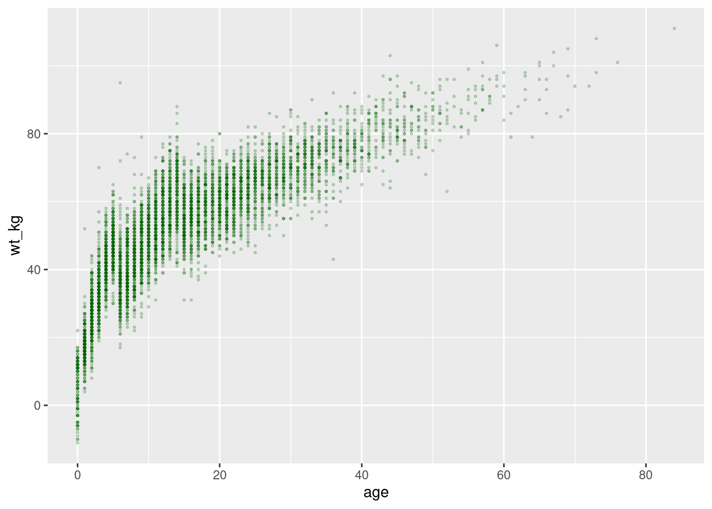
列の値に応じたスケーリング
もう一つの方法は、プロットオブジェクトの美しさを列の値に応じて調整することです。この方法では、この視覚的特性の表示は、データのその列における観測値に依存することになります。列の値が連続的であれば、その視覚的特性の表示尺度（凡例）は連続的になります。列の値が離散的であれば、凡例には各値が表示され、プロットされたデータは明確に「グループ化」されているように見えます（詳しくはこの章のグループ化のセクションをご覧ください）。
これを実現するには、プロットの視覚的特性を列名（引用符で囲まれていないもの）にマッピングします。これは、mapping = aes() 内で行う必要があります（注：後述するように、コード内にはマッピングの割り当てを行う場所がいくつかあります）。
以下に 2 つの例を示します。
- 1 つ目の例では、（各ポイントの）
color =がageの列にマッピングされ、凡例にスケールが表示されています。この例では、目盛りが存在していることを覚えておいてください。後ほどそれらを修正する方法を示します。 - 2 つ目の例では、2 つの新しいプロットの視覚的特性が列にマッピングされています（
color =とsize =）。一方、プロットの視覚的特性であるshape =とalpha =は、mapping = aes()を使わずに、静的な値にマッピングされています。
# 散布図
ggplot(data = linelist, # データを設定
mapping = aes( # 列名をマッピング
x = age, # x 軸に age をマッピング
y = wt_kg, # y 軸に weight をマッピング
color = age)
)+ # color に age をマッピング
geom_point() # データを点として表示
# 散布図
ggplot(data = linelist, # データを設定
mapping = aes( # 列名をマッピング
x = age, # x 軸に age をマッピング
y = wt_kg, # y 軸に weight をマッピング
color = age, # color に age をマッピング
size = age))+ # size に age をマッピング
geom_point( # データを点として表示
shape = "diamond", # 点を菱形として表示
alpha = 0.3) # 点の透過度を30%として表示

注：軸の割り当ては、常にデータの列に割り当てられます（静的な値ではありません）。これは常に mapping = aes() 内で行われます。
複数の geom を持つプロットなど、より複雑なプロットを作成する場合には、プロットのレイヤーと視覚的特性を把握しておくことが重要になります。以下の例では、size = が geom_point() と geom_smooth() の 2 回割り当てられていますが、どちらも静的な値です。
ggplot(data = linelist,
mapping = aes( # 列名をマッピング
x = age,
y = wt_kg,
color = age_years)
) +
geom_point( # データの各行に点を追加
size = 1,
alpha = 0.5) +
geom_smooth( # トレンドラインの追加
method = "lm", # 線形性に基づく方法
size = 2) # サイズ（線の太さ）を2にマッピングのアサインをする場所
mapping = aes() 内のマッピングは、プロットコマンドの中のいくつかの場所に書くことができ、また複数回書くこともできます。これは、一番最初の ggplot() コマンドの中に書くこともできますし、その下の個々の geom ごとに書くこともできます。ニュアンスは以下の通りです。
- トップの
ggplot()コマンドで作成されたマッピング割り当ては、x =とy =が継承されるように、下にあるすべての geom でデフォルトとして継承されます。 - 1 つの geom 内で行われたマッピング割り当ては、その geom にのみ適用されます。
同様に、トップの ggplot() で指定された data = は、それ以下のすべての geom にデフォルトで適用されますが、geom ごとにデータを指定することもできます（ただし、これはより難しいです）。
このように、以下の各コマンドは同じプロットを作成します。
# これらのコマンドは、同じプロットを作成します
ggplot(data = linelist, mapping = aes(x = age))+
geom_histogram()
ggplot(data = linelist)+
geom_histogram(mapping = aes(x = age))
ggplot()+
geom_histogram(data = linelist, mapping = aes(x = age))グループ
データをグループ化して「グループ別にプロット」することも簡単にできます。実際に、あなたはすでにこれを行っています。
mapping = aes() の中で、「グループ化」列を適切なプロットの視覚的特性に割り当てます。上の例では、連続値の場合、age 列にポイント size = を割り当てました。しかし、これは離散的・カテゴリカルな列にも同じように作用します。
例えば、ポイントを性別ごとに表示したい場合は、mapping = aes(color = gender) とします。凡例が自動的に表示されます。この割り当ては、トップの ggplot() コマンドの中の mapping = aes() の中で行うことができます（そして、geom に継承されます）。また、geom の中の別の mapping = aes() の中で設定することもできます。両方の方法を以下に示します。
ggplot(data = linelist,
mapping = aes(x = age, y = wt_kg, color = gender))+
geom_point(alpha = 0.5)
# この代替コードも、同じプロットを生成します
ggplot(data = linelist,
mapping = aes(x = age, y = wt_kg))+
geom_point(
mapping = aes(color = gender),
alpha = 0.5)geom に応じて、データをグループ化するために異なる引数を使用する必要があることに注意してください。geom_point() の場合は、color =, shape =, size = のいずれかを使用することになるでしょう。 一方、geom_bar() の場合は、fill = を使用することになるでしょう。 これは、geom と、グループ化を反映させたいプロットの美しさに依存しています。
参考までに、データをグループ化する最も基本的な方法は、mapping = aes() のgroup = 引数のみを使用することです。しかし、これだけでは、色、塗りつぶし、形は変わりません。また、凡例も作成されません。しかし、データはグループ化されているので、統計表示には影響があるかもしれません。
プロット内のグループの順序を調整するには、ggplot のヒントの章または因子（ファクタ）型データの章を参照してください。グループ化されたプロットの例は、以下の連続データやカテゴリーデータのプロットのセクションにたくさんあります。
30.6 Facets / Small-multiples
ファセット、もしくは、“small-multiples” とは、 1 つのプロットを複数のパネルに分割するためのもので、データグループごとに 1 つのパネル（「ファセット」）が用意されている。同じ種類のプロットが複数回作成され、それぞれが同じデータセットのサブグループを使用してものになります。
ファセット化は ggplot2 パッケージに付属する機能で、ファセット化された「パネル」の凡例と軸は自動的に整列します。ggplot のヒントの章で説明されている他のパッケージ（cowplot パッケージや patchwork パッケージ）もあり、まったく異なるプロットを 1 つの図にまとめるのにも使われます。
ファセット化は、以下の ggplot2 パッケージの関数のいずれかで行います。
-
facet_wrap()一つの変数の各レベルごとに異なるパネルを表示する。例の一つとしては、地域の病院ごとに異なる流行曲線（エピカーブ）を表示することができます。ファセットは、変数が他の順序が定義された因子でない限り、アルファベット順に並べられます。
- ファセットのレイアウトを決定するために、特定のオプションを呼び出すことができます。例えば、
nrow = 1またはncol = 1で、ファセット化されたプロットが配置される行または列の数を制御することができます。
-
facet_grid()これは、第二の変数をファセットの配置に加えたいときに使用します。ここでは、グリッドの各パネルは、2 つの列の値の間の交点を示しています。例えば、病院と年齢グループの組み合わせごとに、病院が上（列）に、年齢グループが横（行）に沿った疫学曲線を示します。
- サブグループがグリッドで表示されるため、
nrowおよびncolは関係ありません。
これらの関数はそれぞれ、ファセット化する列を指定するための数式シンタックスを受け付けます。両方とも、チルダ ~ の両側に 1 つずつ、最大 2 つの列を受け入れます。
facet_wrap()では、多くの場合、facet_wrap(~hospital)のようにチルダ~を先行させて 1 つの列だけを記述します。しかし、facet_wrap(outcome ~ hospital)のように 2 つの列を書くこともできます。それぞれのユニークな組み合わせは、別のパネルに表示されますが、グリッドには配置されません。見出しには結合された用語が表示され、これらは列と行の間の特定のロジックではありません。ファセット変数を 1 つだけ指定する場合は、ピリオド.が数式の反対側のプレースホルダーとして使用されます（コード例を参照）。facet_grid()では、数式に 1 つまたは 2 つの列を指定することもできます（グリッドのrow ~ columns）。1 つだけ指定したい場合は、facet_grid(. ~ hospital)やfacet_grid(hospital ~ .)のように、チルダの反対側にピリオド.を置くことができます。
ファセットはすぐに圧倒的な量の情報を含むことができるので、ファセットを選択する各変数のレベルが多すぎないようにするのが良いでしょう。ここでは、malaria データセット（ハンドブックとデータのダウンロードを参照）を使った簡単な例を紹介します。malaria データセットは、施設におけるマラリアの毎日の症例数を年齢層別に集計したものです。
以下では、インポートして、簡単な修正を行います。
# これらのデータは、マラリアの症例を施設ごとに日ごとにカウントしたものです
malaria_data <- import(here("data", "malaria_facility_count_data.rds")) %>% # インポート
select(-submitted_date, -Province, -newid) # 不要な列の削除malaria データの最初の 50 行を以下に示します。malaria_tot という列がありますが、年齢グループ別のカウントの列もあります（これらは 2 番目の facet_grid() の例で使用されます）。
facet_wrap()
とりあえず、malaria_tot と District の列に注目してみましょう。年齢別カウントの列は今回は無視します。geom_col() を使って流行曲線（エピカーブ）をプロットします。これは、malaria_tot 列で指定された y 軸の高さに、各日の列を生成します（データはすでに日ごとのカウントなので、geom_col() を使います - 棒グラフを参照）。
facet_wrap() コマンドを追加する際には、チルダを指定し、次にファセットする列を指定します（ここでは District ）。チルダの左側に別の列を配置することもできますが、これは各組み合わせに対して 1 つのファセットを作成することになりますので、代わりに facet_grid() で行うことをお勧めします。この使用例では、District のユニークな値ごとに 1 つのファセットが作成されます。
# District によってファセットされたプロット
ggplot(malaria_data, aes(x = data_date, y = malaria_tot)) +
geom_col(width = 1, fill = "darkred") + # カウントデータを列としてプロットします
theme_minimal()+ # 背景のパネルを簡素化します
labs( # プロットのラベルやタイトルなどを追加します
x = "Date of report",
y = "Malaria cases",
title = "Malaria cases by district") +
facet_wrap(~District) # ファセットが作られます
facet_grid()
facet_grid() を使って、2 つの変数をクロスさせることができます。例えば、District と age を交差させたいとしましょう。さて、これらのデータを ggplot が好む「縦に長い」フォーマットにするために、年齢の列にいくつかのデータ変換を行う必要があります。年齢グループはそれぞれ独自の列を持っていますが、ここでは age_group という 1 つの列と num_cases という別の列に分けます。このプロセスの詳細については、データの縦横変換の章を参照してください。
malaria_age <- malaria_data %>%
select(-malaria_tot) %>%
pivot_longer(
cols = c(starts_with("malaria_rdt_")), # 縦長に転回する列を選びます
names_to = "age_group", # 列名を age_group にします
values_to = "num_cases" # 値を 1 つの列（num_cases）にまとめます
) %>%
mutate(
age_group = str_replace(age_group, "malaria_rdt_", ""),
age_group = forcats::fct_relevel(age_group, "5-14", after = 1))これで、最初の 50 行のデータは次のようになります。
2 つの変数を facet_grid() に渡すとき、x が行、y が列である数式表記 (例: x ~ y ) を使用するのが最も簡単です。ここでは、facet_grid() を使って、 age_group とDistrict の列の組み合わせごとにプロットを表示しています。
ggplot(malaria_age, aes(x = data_date, y = num_cases)) +
geom_col(fill = "darkred", width = 1) +
theme_minimal()+
labs(
x = "Date of report",
y = "Malaria cases",
title = "Malaria cases by district and age group"
) +
facet_grid(District ~ age_group)自由または固定軸
ファセット化の際に表示される軸のスケールは、デフォルトでは必ずしも常に適切ではありません。これは、相互比較には便利ですが、必ずしも適切ではありません。
facet_wrap() または facet_grid() を使用する場合、scales = "free_y" を追加することで、各パネルで固定された y 軸のスケールを開放（自由に）して、そのデータサブセットを適切な範囲で表示させることができます。これは、サブカテゴリーの 1 つで実際のカウントが小さく、トレンドが見えにくい場合に特に有効です。また、“free_y” の代わりに “free_x” と書けば、x 軸（日付など）にも同じことができますし、両方の軸を同様に開放するために、引数の値として “free” と設定することもできます。facet_grid では、同じ行のファセットでは y スケールが同じになり、同じ列のファセットでは x スケールが同じになることに注意してください。
facet_grid のみを使用する場合、space = "free_y" または space = "free_x" を追加することで、ファセットの実際の高さまたは幅が中の図の値に重み付けされます。これは、scales = "free"（y または x）がすでに適用されている場合にのみ機能します。
# 自由な y 軸
ggplot(malaria_data, aes(x = data_date, y = malaria_tot)) +
geom_col(width = 1, fill = "darkred") + # カウントデータを列としてプロットします
theme_minimal()+ # 背景のパネルを簡素化します
labs( # プロットのラベルやタイトルなどを追加します
x = "Date of report",
y = "Malaria cases",
title = "Malaria cases by district - 'free' x and y axes") +
facet_wrap(~District, scales = "free") # ファセットが作られますファセット内の因子レベルの順序
ファセット内の因子レベルの順序を変更する方法については、こちらの記事を参照してください。
30.7 プロットの保存
プロットの保存
デフォルトでは ggplot() コマンドを実行すると、プロットは RStudio の Plots ペインに表示されます。しかし、代入演算子 <- を使い、名前を付けてプロットをオブジェクトとして保存することもできます。そうすれば、オブジェクト名自体が呼び出されて実行されない限り、表示されません。プロット名を print() で囲んで表示することもできますが、これは、複数のプロットを一度に表示するための for ループの中でプロットを作成する場合など、特定の状況でのみ必要となります（ループと反復処理・リストの操作の章を参照）。
# プロットを定義します
age_by_wt <- ggplot(data = linelist, mapping = aes(x = age_years, y = wt_kg, color = age_years))+
geom_point(alpha = 0.1)
# 表示する
age_by_wt 保存されたプロットの修正
ggplot2 パッケージの良いところは、（上記のように）プロットを定義して、その名前から始まるレイヤーを追加できることです。元のプロットを作ったすべてのコマンドを繰り返す必要はありません。
例えば、上で定義したプロット age_by_wt を修正して、50 歳のところに縦線を入れるには、単に + と記載して、続けてプロットに新しいレイヤーを追加し始めることができます。
age_by_wt+
geom_vline(xintercept = 50)プロットのエクスポート
ggplot のエクスポートは、ggplot2 パッケージの ggsave() で簡単にできます。この関数は 2 つの方法で動作させることができます。
-
プロットオブジェクトの名前を指定した後、ファイルのパスと拡張子付きの名前を指定します。
- 例：
ggsave(my_plot, here("plots", "my_plot.png"))
- 例：
-
ファイルパスのみを指定してコマンドを実行すると、最後に出力されたプロットが保存されます。
- 例：
ggsave(here("plots", "my_plot.png"))
- 例：
ファイルパスに拡張子を指定することで、png、pdf、jpeg、tiff、bmp、svgなどのファイル形式でエクスポートすることができます。
また、引数として、width =、height =、units =（“in”、“cm”、“mm” のいずれか）を指定することができます。また、プロットの解像度を表す数字（例：300）で dpi ＝ を指定することもできます。関数の詳細については、?ggsave を入力するか、オンラインのドキュメントを参照してください。
また、here() 構文を使って、必要なファイルパスを指定することもできます。詳しくは、データのインポート・エクスポート](#importing)の章をご覧ください。
30.8 ラベル
グラフを作成していると、必ずプロットのラベルを追加したり調整したくなるでしょう。これらは、labs() の中で行うことが、最も簡単な方法です。labs() は、geom と同じように + でプロットに追加されます。
labs() では、これらの引数に文字列を指定することができます。
-
x =とy =x 軸と y 軸のタイトル（ラベル）
-
title =プロットのメインタイトル
-
subtitle =プロットのサブタイトル、タイトルの下に小さいテキストで表示
-
caption =プロットのキャプション、デフォルトでは右下に表示される
以下は、以前に作成したプロットですが、ラベルがより良いものになっています。
age_by_wt <- ggplot(
data = linelist, # データを設定
mapping = aes( # map aesthetics to column values
x = age, # x 軸に age をマッピング
y = wt_kg, # y 軸に weight をマッピング
color = age))+ # 色に age をマッピング
geom_point()+ # データを点として表示
labs(
title = "Age and weight distribution",
subtitle = "Fictional Ebola outbreak, 2014",
x = "Age in years",
y = "Weight in kilos",
color = "Age",
caption = stringr::str_glue("Data as of {max(linelist$date_hospitalisation, na.rm=T)}"))
age_by_wtキャプションの割り当てでは、stringr パッケージの str_glue() を使って、文字列テキストの中にダイナミックな R コードを埋め込んだことに注目してください。キャプションには、“Data as of:” キャプションには、linelist の最大入院日を反映した “Data as of:”の日付が表示されます。詳しくは、文字型・文字列型データの章をご覧ください。
凡例のタイトルを指定する際の注意点：凡例には複数の尺度を設定できるため、「凡例タイトル」の引数は 1 つではありません。labs() の中で、凡例の作成に使われるプロットの視覚的特性の引数を書き、この方法でタイトルを指定することができます。たとえば、上記では、color = age を割り当てて凡例を作成しました。したがって、color = を labs() に指定し、希望する凡例のタイトル（大文字の A の “Age” ）を割り当てます。aes(fill = COLUMN) で凡例を作成した場合は、labs() で fill = と書き、その凡例のタイトルを調整します。ggplot のヒントの章のカラースケールのセクションでは、凡例の編集についての詳細と、scales_() を使った別の方法が紹介されています。
30.9 テーマ
ggplot2 パッケージの優れた点の 1 つは、プロットを自由にコントロールできることです-何でも定義できます！前述したように、データの形や幾何学的形状に関係のないプロットのデザインは、theme() 内で調整されます。例えば、プロットの背景色、グリッドラインの有無、テキスト（タイトル、サブタイトル、キャプション、軸テキスト…）のフォント／サイズ／色／配置などです。これらの調整は、次の 2 つの方法で行うことができます。
- 全体的な調整を行うための完全なテーマ
theme_()の追加 -theme_classic()、theme_minimal()、theme_dark()、theme_light()、theme_grey()、theme_bw()などがあります。
-
theme()内でプロットの個別の要素を調整する
完全なテーマ
完全なテーマ関数の使い方は複雑ではなく非常に簡単なので、ここではその機能を紹介し、詳細な説明を省略します。なお、theme() による微調整は、完全なテーマを使用した後に行う必要があります。
完全なテーマの終わりに、空の括弧をつけて書いてください。
ggplot(data = linelist, mapping = aes(x = age, y = wt_kg))+
geom_point(color = "darkgreen", size = 0.5, alpha = 0.2)+
labs(title = "Theme classic")+
theme_classic()
ggplot(data = linelist, mapping = aes(x = age, y = wt_kg))+
geom_point(color = "darkgreen", size = 0.5, alpha = 0.2)+
labs(title = "Theme bw")+
theme_bw()
ggplot(data = linelist, mapping = aes(x = age, y = wt_kg))+
geom_point(color = "darkgreen", size = 0.5, alpha = 0.2)+
labs(title = "Theme minimal")+
theme_minimal()
ggplot(data = linelist, mapping = aes(x = age, y = wt_kg))+
geom_point(color = "darkgreen", size = 0.5, alpha = 0.2)+
labs(title = "Theme gray")+
theme_gray()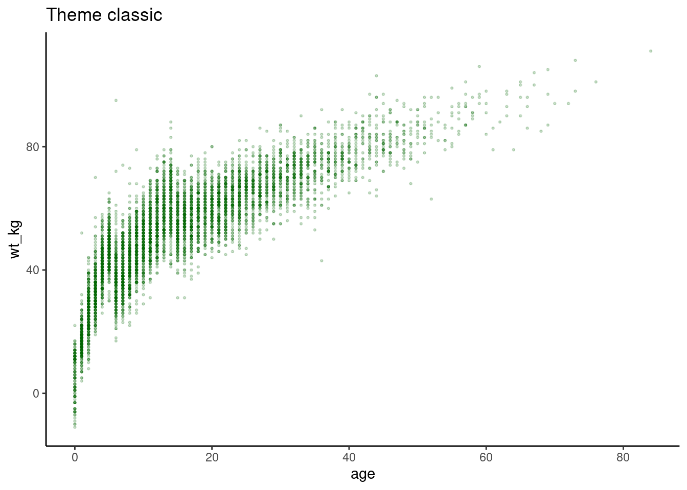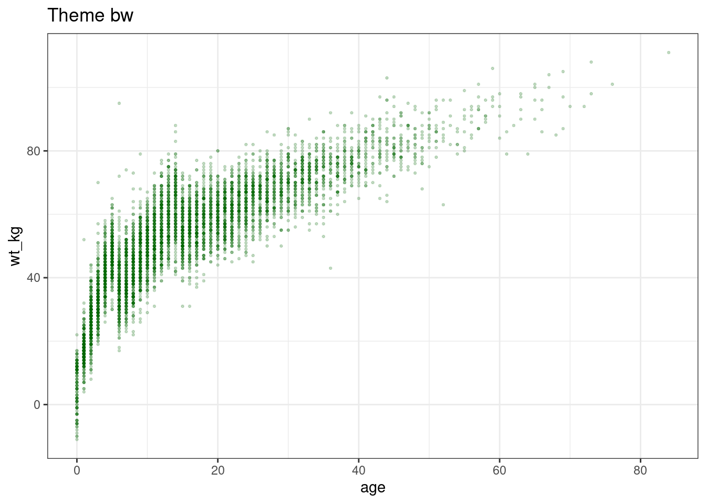
Modify theme
theme() は多数の引数を設定することができ、それぞれの設定がプロットの特定の要素を編集します。すべての引数を網羅することはできませんが、一般的なパターンを説明し、必要な引数名を見つける方法を示します。基本的な構文は以下の通りです。
-
theme()内で、編集したいプロット要素の引数名をplot.title =のように書きます。 - その引数に
element_()を与えます。 - よく使うのは
element_text()ですが、キャンバスの背景色を指定するelement_rect()や、プロット要素を削除するelement_blank()などもあります。
-
element_()の中で、引数の設定を書いてあなたの望む微調整を行ってください。
さて、ここまでの説明はかなり抽象的でしたので、いくつか例を挙げてみましょう。
下のプロットはとてもくだらなく感じるかもしれませんが、プロットを調整するための様々な方法を示すことができます。
- まず上で定義した
age_by_wtというプロットにtheme_classic()を追加します。
- より細かい調整のために、
theme()を追加し、調整する各プロット要素に 1 つの引数を加えます。
引数を logical sections で整理すると良いでしょう。以下に使用されている引数のいくつかを説明します。
-
legend.position =は、“bottom” 、“top” 、“left” 、“right” といった単純な値を受け付ける点で独特です。しかし、一般的にテキスト関連の引数は、element_text()内に詳細を記述する必要があります。
-
element_text(size = 30)でタイトルの大きさを設定します。
-
element_text(hjust = 0)でキャプションの水平方向の配置（右から左へ）を設定します。
- サブタイトルのイタリック化を
element_text(face = "italic")で設定します。
age_by_wt +
theme_classic()+ # 事前に設定されたテーマの調整
theme(
legend.position = "bottom", # 凡例を下に移動
plot.title = element_text(size = 30), # タイトルのサイズを30に
plot.caption = element_text(hjust = 0), # 左揃えのキャプション
plot.subtitle = element_text(face = "italic"), # サブタイトルを斜体に
axis.text.x = element_text(color = "red", size = 15, angle = 90), # x 軸テキストのみの調整
axis.text.y = element_text(size = 15), # y 軸テキストのみの調整
axis.title = element_text(size = 20) # 両方の軸の調整
) 
ここでは、特によく使われる theme() の引数を紹介します。例えば、.x や .y を付加して 1 つの軸だけに変更を適用するなど、いくつかのパターンに気づくでしょう。
theme() の引数 |
調整する内容 |
|---|---|
plot.title = element_text() |
タイトル |
plot.subtitle = element_text() |
サブタイトル |
plot.caption = element_text() |
キャプション（ファミリー、フェイス、カラー、サイズ、アンル、vjust、hjust…） |
axis.title = element_text() |
軸タイトル（ x と y の両方）（サイズ、面、角度、色…） |
axis.title.x = element_text() |
軸タイトル x 軸のみ（ y 軸のみの場合は .y を使用） |
axis.text = element_text() |
軸のテキスト（xとyの両方） |
axis.text.x = element_text() |
軸テキスト x 軸のみ ( y 軸のみの場合は .y を使用） |
axis.ticks = element_blank() |
軸の目盛りの削除 |
axis.line = element_line() |
軸線（色、サイズ、線の種類：実線、破線、点線など） |
strip.text = element_text() |
ファセットストリップテキスト（色、面、サイズ、角度など） |
strip.background = element_rect() |
ファセットストリップ（フィル、カラー、サイズなど） |
しかし、テーマの引数は非常に多いです。これら全てをどうやって覚えればよいのでしょうか？心配しないでください。すべてを覚えるのは不可能です。幸いなことに、あなたを助けるためのツールがいくつかあります。
引数に関する完全なリストは、テーマの修正に関する tidyverse パッケージの文書にあります。
<style=“color: darkgreen;”>ヒント：ggplot2 パッケージからtheme_get() を実行すると、90 以上の theme() 引数のリストがコンソールに表示されます。
<style=“color: darkgreen;”>TIP： もしプロットの要素を削除したくなったら、theme() を通して行うこともできます。element_blank() を引数に渡せば、その要素は完全に消えてしまいます。凡例については、legend.position = "none" と設定します。
30.10 色
ggplot tipsの章のカラースケールの項をご覧ください。
30.11 ggplot2へのパイピング
パイプを使ってデータをクリーニング・変換すると、変換したデータを ggplot() に簡単に渡すことができます。
関数から関数へデータセットを渡すパイプは、ggplot() が呼ばれると + に移行します。なお、この場合、パイプでつながれたデータセットとして自動的に定義されるので、data = 引数を指定する必要はありません。
これは、次のようになります。
linelist %>% # linelist から始めます
select(c(case_id, fever, chills, cough, aches, vomit)) %>% # 列を選択します
pivot_longer( # 縦長のデータに転回します
cols = -case_id,
names_to = "symptom_name",
values_to = "symptom_is_present") %>%
mutate( # 欠測値を置換します
symptom_is_present = replace_na(symptom_is_present, "unknown")) %>%
ggplot( # ggplotの開始！
mapping = aes(x = symptom_name, fill = symptom_is_present))+
geom_bar(position = "fill", col = "black") +
theme_classic() +
labs(
x = "Symptom",
y = "Symptom status (proportion)"
)30.12 連続データのプロット
この章では、連続データをプロットする多くの例を見てきました。ここでは、これらを簡単に整理し、いくつかのバリエーションを紹介します。 ここで扱う可視化は以下の通りです。
-
1 つの連続変数のプロット：
- ヒストグラム、連続変数の分布を示す典型的なグラフ。
- 箱ひげ図（Box and Whiskerとも呼ばれる）、25、50、75 パーセントタイル、分布の最後尾、外れ値（重要な制限）を示します。
- ジッタープロット、すべての値を ‘ジッター’ された点として表示し、2 つの値が同じであっても、（ほとんど）すべてを見ることができます。
- バイオリンプロット、連続変数の分布を、‘バイオリン’ の対称的な幅に基づいて表示します。
- Sinaプロット、ジッタープロットとバイオリンプロットを組み合わせたもので、個々の点が分布の対称的な形で表示されます（ ggforce パッケージを使用）。
2 つの連続変数の散布図
3 つの連続変数のヒートマップ（ ヒートマップ の章へのリンク）
ヒストグラム
ヒストグラムは棒グラフに似ていますが、連続変数の分布を測定するという点で異なります。「棒」の間にはスペースがなく、geom_histogram() には 1 つの列しか与えられません。
以下は、ヒストグラムを生成するためのコードです。ヒストグラムは、連続データを範囲に分け、高さの異なる隣り合った棒で表示します。これは geom_histogram() を使って行われます。geom_histogram() 、geom_bar() 、geom_col() の違いについては、ggplot の基本の章の 「棒グラフ」の項を参照してください。
ここでは、症例の年齢分布を表示します。mapping = aes() で、分布を見たい列を指定します。この列は、x 軸にも y 軸にも割り当てることができます。
行は、数値化された年齢に基づいて「階級」に割り当てられ、これらの階級は棒でグラフ化されます。bins = で階級の数を指定すると、ヒストグラムの最小値と最大値の間に等間隔でブレークポイントが置かれます。bins = が指定されていない場合は、適切な階級の数が推測され、プロットの後にこのメッセージが表示されます。
## `stat_bin()` using `bins = 30`. Pick better value with `binwidth`.bins = に階級の数を指定したくない場合は、代わりに軸の単位で binwidth = を指定することができます。ここでは、さまざまな階級と階級幅を示す例をいくつか紹介します。
# A) 一般的なヒストグラム
ggplot(data = linelist, aes(x = age))+ # x 変数を与えます
geom_histogram()+
labs(title = "A) Default histogram (30 bins)")
# B) より多い階級
ggplot(data = linelist, aes(x = age))+ # x 変数を与えます
geom_histogram(bins = 50)+
labs(title = "B) Set to 50 bins")
# C) より少ない階級
ggplot(data = linelist, aes(x = age))+ # x 変数を与えます
geom_histogram(bins = 5)+
labs(title = "C) Set to 5 bins")
# D) より多い階級
ggplot(data = linelist, aes(x = age))+ # x 変数を与えます
geom_histogram(binwidth = 1)+
labs(title = "D) binwidth of 1")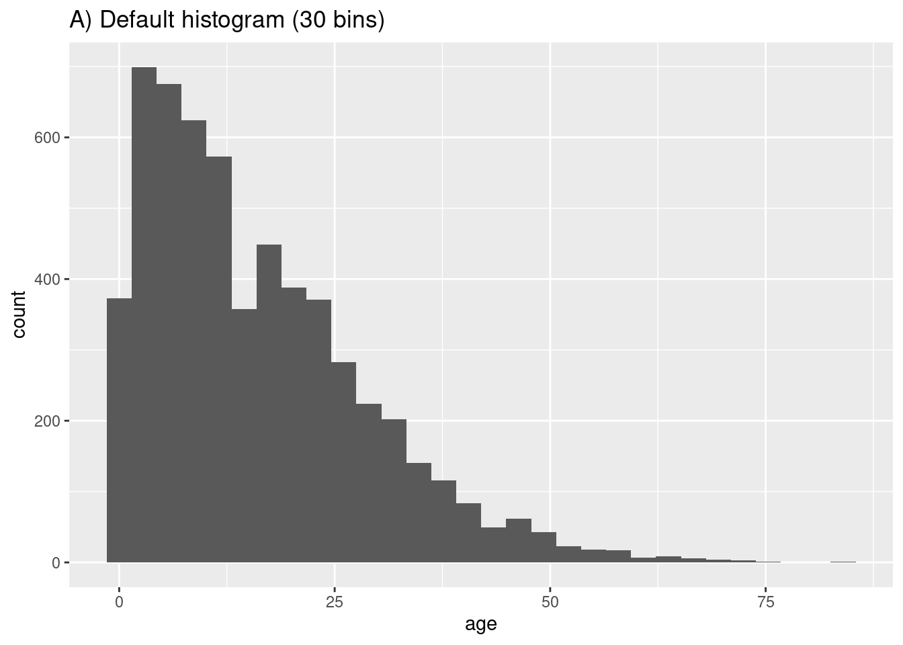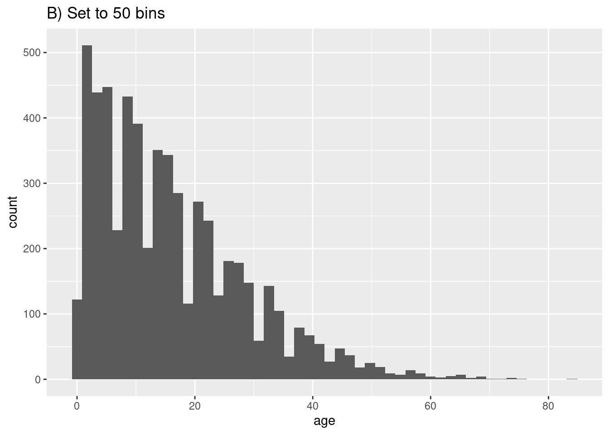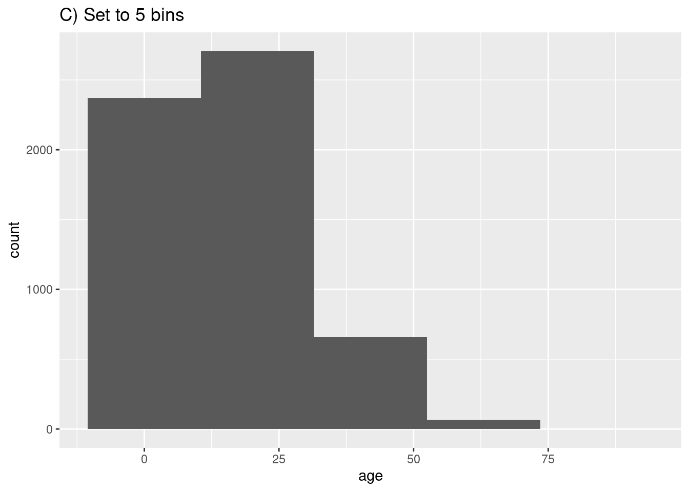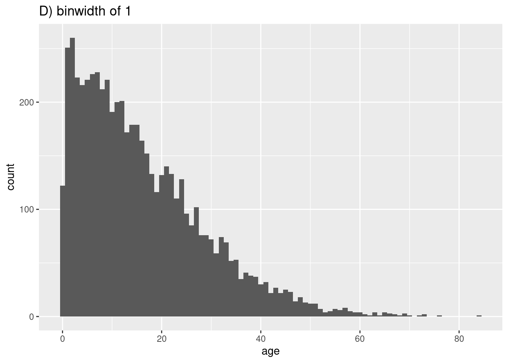
滑らかに描画した各階級の割合を見るには、geom_density() を使用します。
# 平滑化した割合の軸
ggplot(data = linelist, mapping = aes(x = age)) +
geom_density(size = 2, alpha = 0.2)+
labs(title = "Proportional density")
# 積み上げ・平滑化した割合の軸
ggplot(data = linelist, mapping = aes(x = age, fill = gender)) +
geom_density(size = 2, alpha = 0.2, position = "stack")+
labs(title = "'Stacked' proportional densities")（連続した列のデータの）「積み上げられた」ヒストグラムを得るには、以下のいずれかの方法があります。
-
geom_histogram()のfill =引数をaes()内で使用し、グループ化された列に割り当てます。 -
geom_freqpoly()を使用します。こちらの方が読みやすいでしょう（binwidth =を設定できます）。
- すべての値の比率を見るには、
y = after_stat(density)を設定します（この構文を正確に使用してください-あなたのデータに応じて変更しないでください）。注意：これらの比率はグループごとに表示されます。
それぞれを以下に示します（*それぞれで color = vs fill = を使用していることに注意）。
#「積み上げられた」ヒストグラム
ggplot(data = linelist, mapping = aes(x = age, fill = gender)) +
geom_histogram(binwidth = 2)+
labs(title = "'Stacked' histogram")
# 頻度
ggplot(data = linelist, mapping = aes(x = age, color = gender)) +
geom_freqpoly(binwidth = 2, size = 2)+
labs(title = "Freqpoly")
# 割合の軸
ggplot(data = linelist, mapping = aes(x = age, y = after_stat(density), color = gender)) +
geom_freqpoly(binwidth = 5, size = 2)+
labs(title = "Proportional freqpoly")
# 平滑化した割合の軸
ggplot(data = linelist, mapping = aes(x = age, y = after_stat(density), fill = gender)) +
geom_density(size = 2, alpha = 0.2)+
labs(title = "Proportional, smoothed with geom_density()")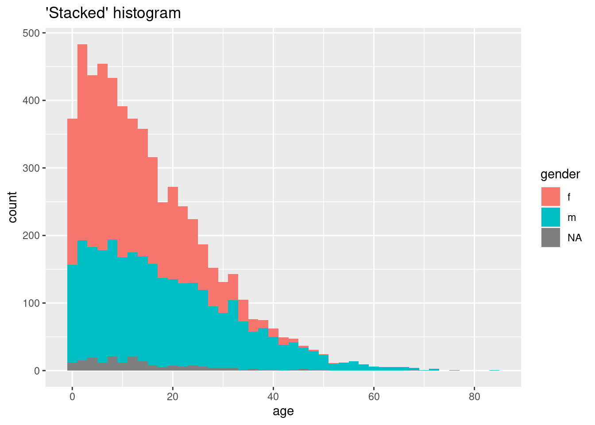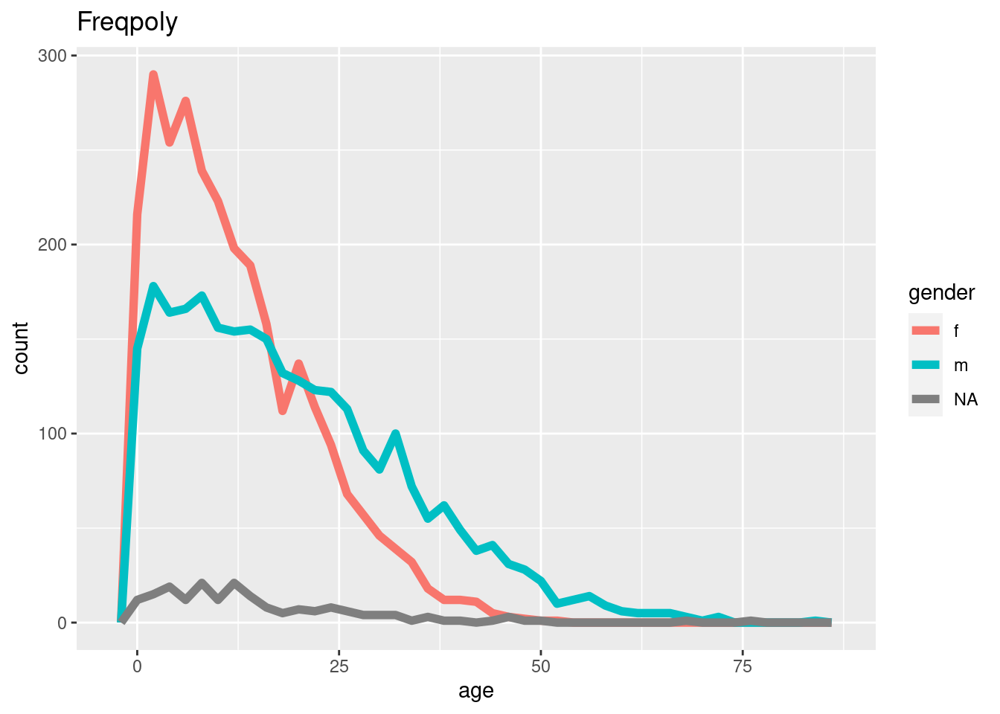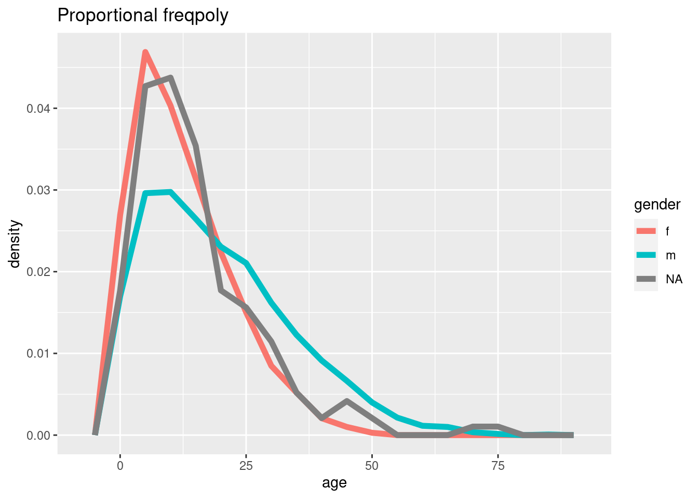
少し楽しみたい方は、ggridges パッケージの geom_density_ridges を試してみてください（ビニエット（vignette）はこちら）。
ヒストグラムについての詳細は、tidyverse の geom_histogram() のページを参照してください。
箱ひげ図
箱ひげ図は一般的ですが、重要な制限があります。例えば、両峰性の分布など、実際の分布が不明瞭になることがあります。詳しくは、R graph gallery や data-to-viz article の記事を参照してください。しかし、四分位範囲と外れ値はきれいに表示されるので、分布をより詳細に表示する他の種類のグラフの上に重ねて表示することができます。
以下に、箱ひげ図の構成要素を示します。

geom_boxplot() を使って箱ひげ図を作成する場合、通常は aes() 内で 1 つの軸（x または y）のみをマッピングします。指定された軸は、プロットが水平か垂直かを決定します。
ほとんどの geom では、aes() 内で color = や fill = などに列を視覚的特性をとして割り当てることで、グループごとにプロットを作成します。しかし、箱ひげ図の場合は、グループ化された列を割り当てられていない軸（ x または y ）に割り当てることで実現します。下のコードは、データセット内のすべての年齢値を箱ひげ図にしたもので、次のコードは、データセット内の（欠損していない）性別ごとに 1 つの箱ひげ図を表示するものです。NA（欠損）の値は、削除しない限り、別の箱ひげ図として表示されることに注意してください。この例では、各プロットが異なる色になるように、outcome の列を fill に設定していますが、これは必須ではありません。
# A) 箱ひげ図
ggplot(data = linelist)+
geom_boxplot(mapping = aes(y = age))+ # y 軸だけマッピング ( x はなし)
labs(title = "A) Overall boxplot")
# B) グループごとの箱ひげ図
ggplot(data = linelist, mapping = aes(y = age, x = gender, fill = gender)) +
geom_boxplot()+
theme(legend.position = "none")+ # 凡例を除く
labs(title = "B) Boxplot by gender") 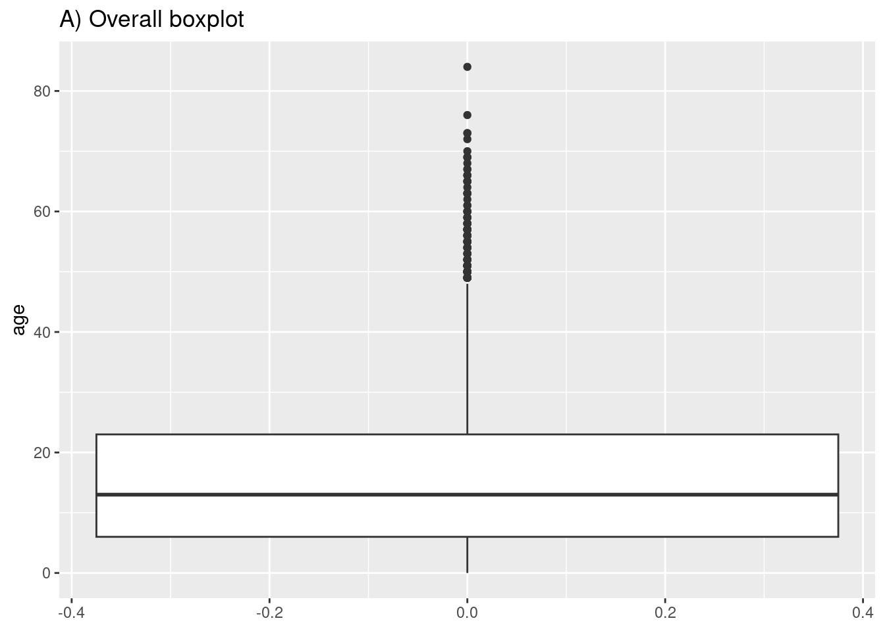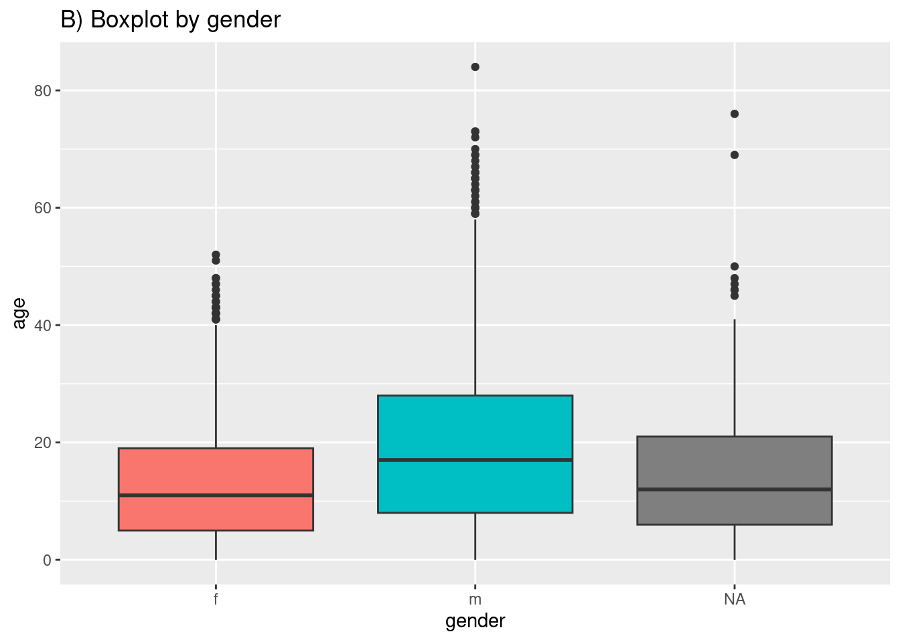
散布図の端に箱ひげ図を追加するコード（“marginal” プロット）については、ggplot のヒントの章をご覧ください。
バイオリンプロット、ジッタープロット、sinaプロット
以下は、分布を示すバイオリンプロット（geom_violin）とジッタープロット（geom_jitter）を作成するコードです。aes() 内にこれらのオプションを挿入することで、塗りつぶしや色もデータによって決定されるように指定できます。
# A) グループごとのジッタープロット
ggplot(data = linelist %>% drop_na(outcome), # 欠損値を除く
mapping = aes(y = age, # 連続値
x = outcome, # グループ化する変数
color = outcome))+ # 色の変数
geom_jitter()+ # ジッタープロットを作成
labs(title = "A) jitter plot by gender")
# B) グループごとのバイオリンプロット
ggplot(data = linelist %>% drop_na(outcome), # 欠損値を除く
mapping = aes(y = age, # 連続値
x = outcome, # グループ化する変数
fill = outcome))+ # 塗りつぶしの変数
geom_violin()+ # バイオリンプロットを作成
labs(title = "B) violin plot by gender") 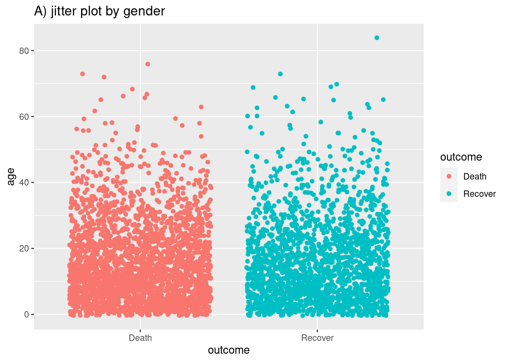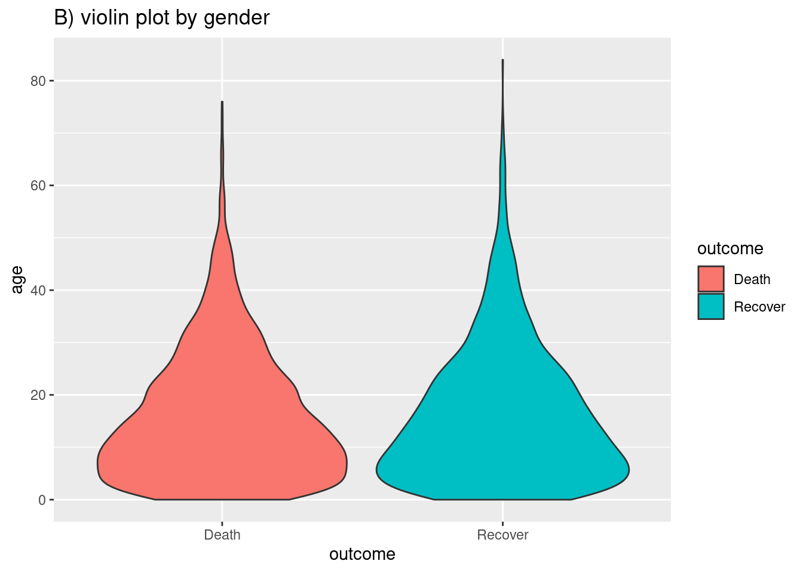
ggforce パッケージの geom_sina() を使って、この 2 つを組み合わせることができます。sinaは、ジッターポイントをバイオリンプロットの形でプロットします。バイオリンプロットに重ねて表示すると（透明度を調整して）、視覚的に解釈しやすくなります。
# A) グループごとの sina プロット
ggplot(
data = linelist %>% drop_na(outcome),
aes(y = age, # 数値の変数
x = outcome)) + # グループ化する変数
geom_violin(
aes(fill = outcome), # バイオリンの背景の色
color = "white", # 白の輪郭
alpha = 0.2)+ # 透過度
geom_sina(
size=1, # ジッターのサイズの変更
aes(color = outcome))+ # 点の色
scale_fill_manual( # death/recoverごとにバイオリンの背景の色
values = c("Death" = "#bf5300",
"Recover" = "#11118c")) +
scale_color_manual( # death/recoverごとに点の色
values = c("Death" = "#bf5300",
"Recover" = "#11118c")) +
theme_minimal() + # グレイの背景の削除
theme(legend.position = "none") + # 不要な凡例の削除
labs(title = "B) violin and sina plot by gender, with extra formatting") 2 つの連続変数
同様の構文で geom_point() を使用すると、2 つの連続変数を互いに散布図にプロットすることができます。これは、分布ではなく実際の値を示すのに便利です。年齢と体重の基本的な散布図を (A) に示します。(B) では、facet_grid() を使って、linelist の 2 つの連続変数の関係を示しています。
# weight と age の基本的な散布図
ggplot(data = linelist,
mapping = aes(y = wt_kg, x = age))+
geom_point() +
labs(title = "A) Scatter plot of weight and age")
# 性別とエボラのアウトカムごとの weight と age の基本的な散布図
ggplot(data = linelist %>% drop_na(gender, outcome), # gender/outcome について欠損値がないものを保持
mapping = aes(y = wt_kg, x = age))+
geom_point() +
labs(title = "B) Scatter plot of weight and age faceted by gender and outcome")+
facet_grid(gender ~ outcome) 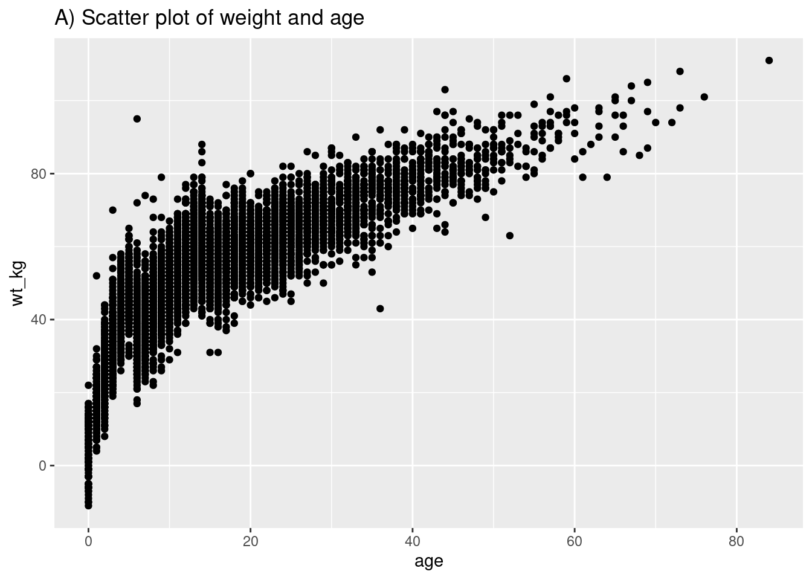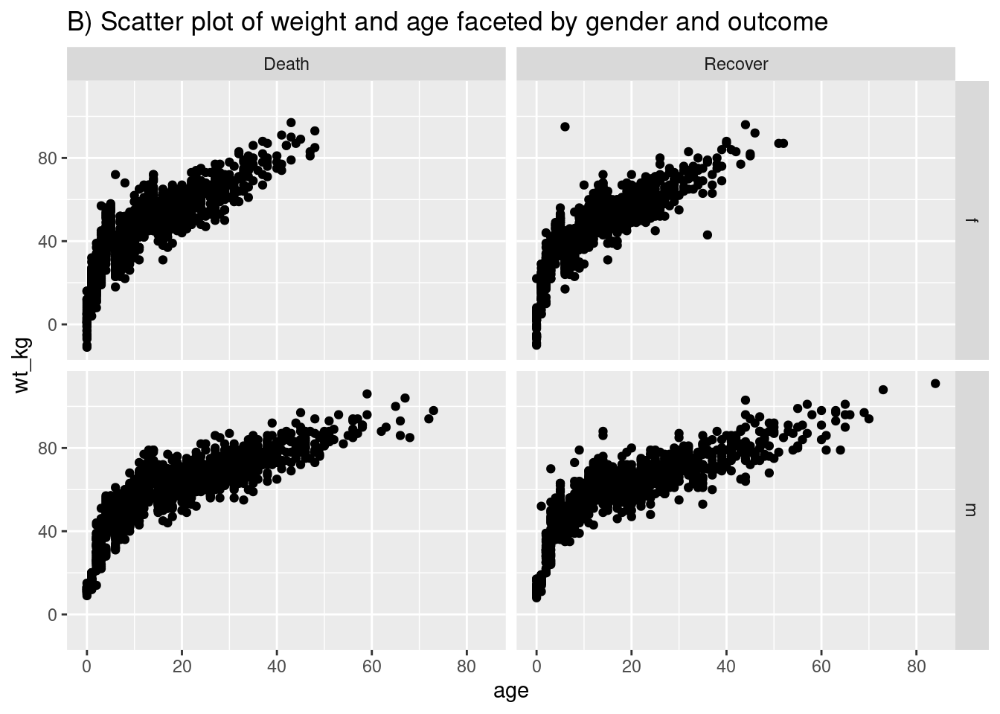
3 つの連続変数
3 つの連続変数を表示するには、fill = 引数を利用してヒートプロットを作成します。各「セル」の色は、3 つ目の連続データの列の値を反映します。詳しくはggplot のヒントの章と、ヒートマップの章に例があります。
R で 3D プロットを作成する方法はありますが、実践的な疫学では解釈が難しいことが多く、意思決定にはあまり役に立ちません。
30.13 カテゴリカルなデータのプロット
カテゴリカルなデータには、文字値、ロジカル値（TRUE ／ FALSE）、因子（因子（ファクタ）型データの章を参照）などがあります。
準備
データの構造
カテゴリカルなデータについて最初に理解すべきことは、それが linelist の症例のような生の観測値として存在しているのか、それとも数や割合を保持するようやくまたは集約したデータフレームとして存在しているのかということです。データの状態によって、使用するプロット関数が変わります。
- データが生の観測値で、観測ごとに 1 行の場合は、
geom_bar()を使用するでしょう。 - データがすでにカウントや割合に集約されている場合は、
geom_col()を使用するでしょう。
列のデータ型と値の順序
次に、プロットしたい列のデータ型を調べます。ここでは、まず base R の class() を使って hospital を、そして janitor パッケージの tabyl() を使って調べます。
# hospital 列のデータ型を確認する - それは文字列である
class(linelist$hospital)## [1] "character"
# 病院の列の中の値と割合を見る
linelist %>%
tabyl(hospital)## hospital n percent
## Central Hospital 454 0.07710598
## Military Hospital 896 0.15217391
## Missing 1469 0.24949049
## Other 885 0.15030571
## Port Hospital 1762 0.29925272
## St. Mark's Maternity Hospital (SMMH) 422 0.07167120デフォルトの設定では、アルファベット順に並んだ病院名が文字として表示されていることが確認できます。‘other’ と ‘missing’ の値がありますが、これらは、内訳を表示する際に最後に表示するサブカテゴリにする方が好ましいです。そこで、この列を因子型に変更し、並び替えを行います。この内容については、因子（ファクタ）型データの章で詳しく説明しています。
# 因子に変換し、順序を定義することで、"Other" と "Missing" が最後になります
linelist <- linelist %>%
mutate(
hospital = fct_relevel(hospital,
"St. Mark's Maternity Hospital (SMMH)",
"Port Hospital",
"Central Hospital",
"Military Hospital",
"Other",
"Missing"))
levels(linelist$hospital)## [1] "St. Mark's Maternity Hospital (SMMH)"
## [2] "Port Hospital"
## [3] "Central Hospital"
## [4] "Military Hospital"
## [5] "Other"
## [6] "Missing"
geom_bar()
棒の高さ（または積み重ねられた棒の高さ）にデータの関連する行の数を反映させたい場合は、geom_bar() を使用します。これらの棒は、 width = が調整されない限り、棒の間に隙間ができます。
軸列の割り当ては 1 つだけにしてください（通常は x 軸）。x と y を指定すると、
Error: stat_count() can only have an x or y aesthetic.が表示されます。mapping = aes()内でfill =の割り当てを追加することで、積み上げ棒グラフを作成できます。反対側の軸は、行数を表すため、デフォルトでは “count” というタイトルになります。
下の例では、y 軸に outcome を割り当てていますが、x 軸にしても問題ありません。文字の値が長い場合は、棒を横にして凡例を下に配置した方が見栄えが良い場合があります。この場合、fct_rev() で反転させ、missing と other を一番下にしています。
# A) 全症例のアウトカム
ggplot(linelist %>% drop_na(outcome)) +
geom_bar(aes(y = fct_rev(hospital)), width = 0.7) +
theme_minimal()+
labs(title = "A) Number of cases by hospital",
y = "Hospital")
# B) 病院ごとの全症例のアウトカム
ggplot(linelist %>% drop_na(outcome)) +
geom_bar(aes(y = fct_rev(hospital), fill = outcome), width = 0.7) +
theme_minimal()+
theme(legend.position = "bottom") +
labs(title = "B) Number of recovered and dead Ebola cases, by hospital",
y = "Hospital")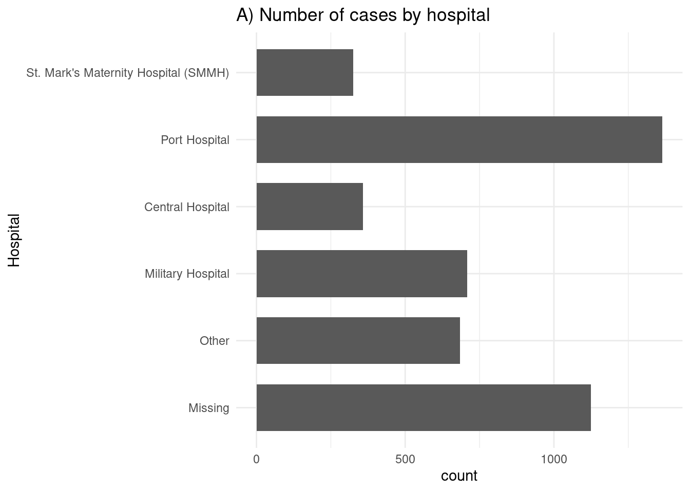
geom_col()
棒グラフの高さ（または積み重ねられた棒グラフの高さ）に、データに含まれる事前に計算された値を反映させたい場合は、geom_col() を使用します。多くの場合、これらは要約や「集約」された数や割合です。
geom_col() に両軸の列を割り当てます。一般的に、x 軸の列は離散的で、y 軸の列は数値です。
例えば、次のようなデータセットの outcome があるとします：
## # A tibble: 2 × 3
## outcome n proportion
## <chr> <int> <dbl>
## 1 Death 1022 56.2
## 2 Recover 796 43.8以下は、エボラ出血熱患者の転帰の分布を示す簡単な棒グラフを作成するための geom_col を使用したコードです。geom_col では、x と y の両方を指定する必要があります。ここで、x は x 軸に沿ったカテゴリー変数、y は生成された proportion の列の割合です。
# 全ての症例のアウトカム
ggplot(outcomes) +
geom_col(aes(x=outcome, y = proportion)) +
labs(subtitle = "Number of recovered and dead Ebola cases")病院別の内訳を表示するには、より多くの情報を含み、「縦に長い」形式の表が必要です。この表は、outcome と hospital を組み合わせたカテゴリーの頻度で作成します（グループ化のtipsについては、データのグループ化の章を参照）。
outcomes2 <- linelist %>%
drop_na(outcome) %>%
count(hospital, outcome) %>% # 病院別、アウトカム別の数を取得
group_by(hospital) %>% # 割合は病院全体に対するものなのでグループ化する
mutate(proportion = n/sum(n)*100) # 病院全体の割合を計算する
head(outcomes2) # データのプレビュー## # A tibble: 6 × 4
## # Groups: hospital [3]
## hospital outcome n proportion
## <fct> <chr> <int> <dbl>
## 1 St. Mark's Maternity Hospital (SMMH) Death 199 61.2
## 2 St. Mark's Maternity Hospital (SMMH) Recover 126 38.8
## 3 Port Hospital Death 785 57.6
## 4 Port Hospital Recover 579 42.4
## 5 Central Hospital Death 193 53.9
## 6 Central Hospital Recover 165 46.1そして、フォーマットを追加した ggplot を作成します。
-
軸の反転：
coord_flip()で軸を反転させて、病院名を読めるようにしました。 -
列を横に並べる：
position = "dodge"という引数を追加し、死亡と回復の棒を重ねるのではなく、並べて表示するようにしました。積み重ねられた棒はデフォルトです。 - 列の幅：‘width’ を指定して、可能な限りの幅の半分の幅で列を表示します。
-
列の順序：
scale_x_discrete(limit=rev)を使用して、‘Other’ と ‘Missing’ が最下部になるように、y 軸のカテゴリの順序を反転させました。scale_y_discreteではなくそれを使ったのは、視覚的には y 軸上にあっても、病院はaes()のx引数で述べられているからであることに注意してください。ggplot は、私たちがそうしないように指示しない限り、カテゴリーを後ろ向きに表示するようですので、このようにしています。 -
その他の詳細：
labsとscale_fill_colorにそれぞれラベル／タイトルと色が追加されました。
# 病院別の全症例のアウトカム
ggplot(outcomes2) +
geom_col(
mapping = aes(
x = proportion, # あらかじめ計算された割合の表示
y = fct_rev(hospital), # レベル順を逆にして、一番下に Missing と other
fill = outcome), # aアウトカムごとに積み上げ
width = 0.5)+ # より細い棒
theme_minimal() + # 最小限のテーマ
theme(legend.position = "bottom")+
labs(subtitle = "Number of recovered and dead Ebola cases, by hospital",
fill = "Outcome", # 凡例のタイトル
y = "Count", # y 軸のタイトル
x = "Hospital of admission")+ # x 軸のタイトル
scale_fill_manual( # 色を手動で追加
values = c("Death"= "#3B1c8C",
"Recover" = "#21908D" )) 割合は二値をとるので、‘recover’ を削除して、死亡した人の割合だけを表示した方が好ましいかもしれません。この処理は単に描画の目的のためだけのものです。
geom_col() を日付データ（例：集計データからのエピカーブ）で使用する場合は、棒の間の「ギャップ」ラインを取り除くために、width = 引数を調整する必要があります。日次データを使用する場合は width = 1 とします。週単位の場合は、width = 7 です。月ごとに日数が異なるため、月を指定することはできません。
geom_histogram()
ヒストグラムは棒グラフのように見えるかもしれませんが、連続変数の分布を測定するという点で異なります。「棒」の間にはスペースがなく、geom_histogram() には 1 つの列しか与えられません。bin_width = や breaks = といったヒストグラム特有の引数があり、データの階級分け方法を指定します。上記の連続データのセクションと流行曲線（エピカーブ）の章に詳細が記載されています。